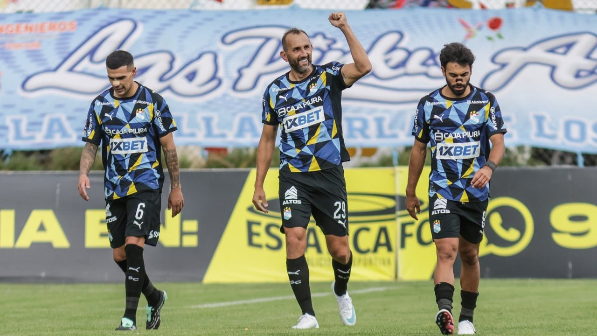
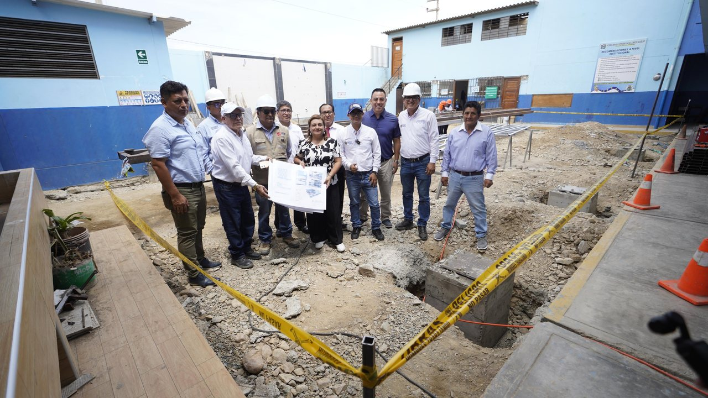
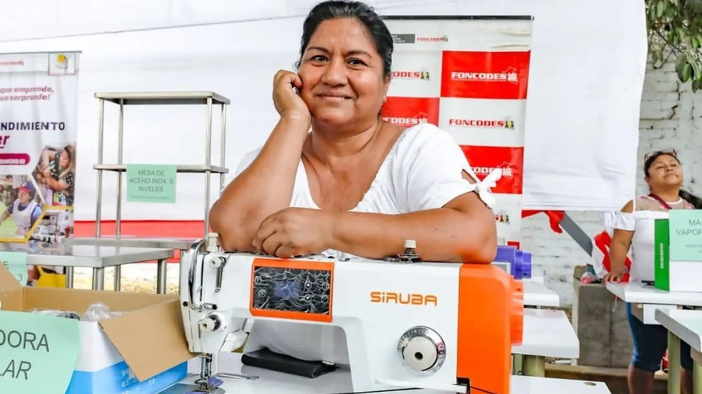

Cuatro sujetos encapuchados y provistos de armas de fuego interceptaron al propietario de una camioneta Toyota Hilux 4x4, de placa BVB716, en el asentamiento humano Virgen Asunta, distrito de Subtanjalla (Ica), y lo encañonaron para apoderarse del vehículo.





Cuatro sujetos encapuchados y provistos de armas de fuego interceptaron al propietario de una camioneta Toyota Hilux 4x4, de placa BVB716, en el asentamiento humano Virgen Asunta, distrito de Subtanjalla (Ica), y lo encañonaron para apoderarse del vehículo.
DSN Noticias en Google Hoy, domingo 8 de noviembre de 2026, el calendario reúne importantes efemérides, celebraciones internacionales y acontecimientos históricos. Cada 8 de noviembre se celebra el Día Internacional de la Radiología, una jornada dedicada a reconocer la importancia del diagnóstico por imágenes en la medicina moderna.
Sigue la transmisión del partidazo Alianza Lima vs Los Chankas. Los jugadores de Alianza Lima y Chankas realizan los trabajos precompetitivos para el inicio del partido. En Alianza Lima, la gran baja será el central Renzo Garcés, quien sufrió un duro golpe en la nariz ante Cienciano y no viajó con la delegación a Andahuaylas.
El hecho tomó lugar en la zona de Agüadita, en la provincia de Islay, región Arequipa. Según las primeras investigaciones, el joven junto a un menor de 16 años llegaron a la peña para capturar cangrejos.
ERM 2026: Alcaldías les caen del cielo a regidoras de Lima Jeanette Alonzo y otras tres concejales esperan proclamación. En 2023 dio el salto a la política como regidora metropolitana de Lima, escaño que mantiene hasta hoy.
La jornada inaugural, disputada el miércoles 4 de noviembre, también tuvo una contundente victoria de Canadá, que goleó 7 a 1 a Ecuador. La competencia reúne a las selecciones de Perú, Canadá, Ecuador y Venezuela, que disputan el torneo bajo el sistema de todos contra todos.
El foco de este decreto es la participación excepcional y temporal de las Fuerzas Armadas en acciones de seguridad externa de los establecimientos penitenciarios declarados en estado de emergencia.
La bailarina Gabriela Herrera afirmó que Ana Paula Consorte ha quedado como tóxica y ‘turuleca’ por su arrebato al haber publicado un historia dedicada a Hernán Barcos para llamar la atención a su esposa por mandarle supuestos besos volados a Paolo Guerrero.
Una lamentable tragedia se registró la madrugada de este domingo 8 de noviembre, a la altura de la Curva de Sun, en el distrito trujillano de Moche. Según información preliminar, el chofer había estacionado su unidad a un costado de la carretera Panamericana Norte para reemplazar una llanta averiada.
Cada edición dura menos de dos minutos. En la web tienes el resumen de cada historia y el enlace directo al medio original para leerla completa.
Conoce Olfatecho →